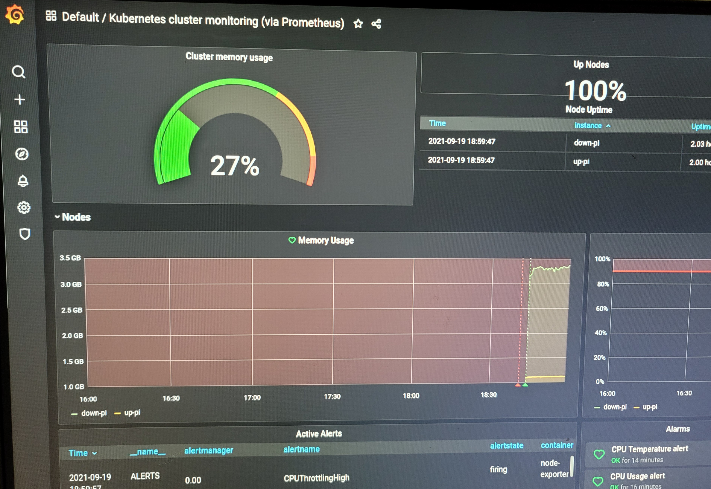

Deploy k3s on RaspberryPi4B

Download k3s, v1.21.4+k3s1
- get the binary
1
2
3
4wget https://github.com/k3s-io/k3s/releases/download/v1.21.4%2Bk3s1/k3s-arm64
sudo chmod +x k3s-arm64
sudo cp k3s-arm64 /usr/sbin/
sudo ln -s /usr/sbin/k3s-arm64 /usr/sbin/k3s - check config
1
sudo k3s check-config
Delploy the server and agent
- run the server
1
2
3# opntion, sudo ifconfig eth0 192.168.168.1/24
# su root
sudo nohup k3s server --node-ip 192.168.168.1 > /dev/null 2>&1 & - run the agent on a different node
1
2
3
4
5# opntion, sudo ifconfig eth0 192.168.168.2/24
# replace the *192.168.168.1* with your own server ip
# NODE_TOKEN comes from /var/lib/rancher/k3s/server/node-token on your server
# sudo cat /var/lib/rancher/k3s/server/node-token
sudo k3s agent --server https://192.168.168.1:6443 --token ${NODE_TOKEN} - change node role
1
2
3
4
5
6
7
8
9
10
11$ sudo k3s kubectl get nodes
NAME STATUS ROLES AGE VERSION
up-pi Ready <none> 17m v1.21.4+k3s1
down-pi Ready control-plane,master 50m v1.21.4+k3s1
$ sudo k3s kubectl label --overwrite nodes up-pi kubernetes.io/role=worker
$ sudo k3s kubectl get nodes
NAME STATUS ROLES AGE VERSION
down-pi Ready control-plane,master 5h8m v1.21.4+k3s1
up-pi Ready worker 4h36m v1.21.4+k3s1
Delploy prometheus-operator(Not complete)
- download prometheus, 0.50.0
1
2
3
4wget https://github.com/prometheus-operator/prometheus-operator/archive/refs/tags/v0.50.0.tar.gz
tar -xvf prometheus-operator-0.50.0.tar.gz
cd prometheus-operator-0.50.0
sed -i 's/namespace: default/namespace: monitoring/g' bundle.yaml - deploy and query
1
2
3
4
5sudo k3s kubectl create namespace monitoring
sudo k3s kubectl get namespaces
# sudo k3s kubectl delete namespace monitoring
sudo k3s kubectl apply -n monitoring -f bundle.yaml
# sudo k3s kubectl delete -n monitoring -f bundle.yaml1
2
3$ sudo k3s kubectl get pods -n monitoring
NAME READY STATUS RESTARTS AGE
prometheus-operator-54c4665c6b-vqbfk 1/1 Running 0 78s
Deploy prometheus-operator/kube-prometheus
- deploy
1
2
3
4sudo k3s kubectl create -f manifests/setup
sudo k3s kubectl create -f manifests/
# sudo k3s kubectl delete --ignore-not-found=true -f manifests/ -f manifests/setup
$ sudo k3s kubectl get pods -n monitoring - debug
1
2
3
4$ sudo k3s kubectl logs -f -n monitoring prometheus-operator-7775c66ccf-fdqsq
error: a container name must be specified for pod prometheus-operator-7775c66ccf-fdqsq, choose one of: [prometheus-operator kube-rbac-proxy]
$ sudo k3s kubectl logs -f -n monitoring prometheus-operator-7775c66ccf-fdqsq -c prometheus-operator - access
1
$ sudo k3s kubectl --namespace monitoring port-forward svc/prometheus-k8s 9090
Deploy carlosedp/cluster-monitoring
download and set config
1
git clone https://github.com/carlosedp/cluster-monitoring.git
modify config file vars.jsonnet: k3s.enabled, k3s.master_ip, suffixDomain, traefikExporter, armExporter
deploy and query status
1
2
3
4
5$ make vendor
$ make
$ kubectl apply -f manifests/setup/
$ kubectl apply -f manifests/
# sudo k3s kubectl delete --ignore-not-found=true -f manifests/ -f manifests/setup1
2
3
4
5
6
7
8
9
10
11
12$ sudo k3s kubectl get pods -n monitoring
NAME READY STATUS RESTARTS AGE
prometheus-operator-67755f959-kp9jn 2/2 Running 0 30m
kube-state-metrics-6cb6df5d4-xcb22 3/3 Running 0 30m
node-exporter-twbjr 2/2 Running 0 30m
node-exporter-k84g2 2/2 Running 0 30m
prometheus-adapter-585b57857b-b7mw7 1/1 Running 0 30m
arm-exporter-flm96 2/2 Running 0 30m
arm-exporter-svvpm 2/2 Running 0 30m
grafana-7bc4784744-w9wk4 1/1 Running 0 30m
alertmanager-main-0 2/2 Running 0 30m
prometheus-k8s-0 3/3 Running 1 30maccess grafana
1
2
3
4
5
6$ sudo k3s kubectl get ingress -n monitoring
[sudo] password for down:
NAME CLASS HOSTS ADDRESS PORTS AGE
alertmanager-main <none> alertmanager.192.168.168.1.nip.io 192.168.124.20,192.168.168.1 80, 443 30m
grafana <none> grafana.192.168.168.1.nip.io 192.168.124.20,192.168.168.1 80, 443 30m
prometheus-k8s <none> prometheus.192.168.168.1.nip.io 192.168.124.20,192.168.168.1 80, 443 30m